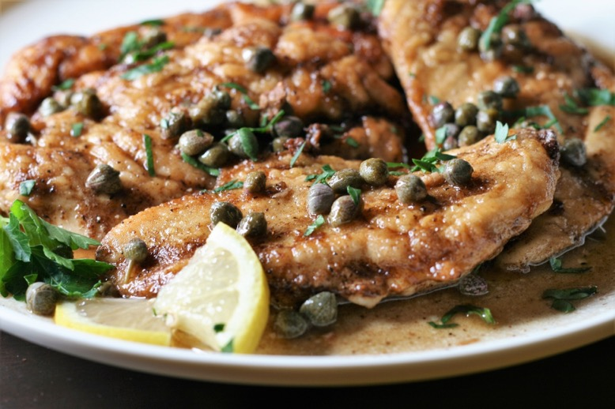

Easy Chicken Piccata
A dinner winner that takes just over 30 minutes to come together. Bright ingredients like lemon, capers, and parsley
Easy Chicken Piccata is children's favorite dish. Serve this chicken recipe over white rice."
Ingredients
- 2 large skinless, boneless chicken breasts
- 1 cup all-purpose flour
- ½ stick butter
- salt and ground black pepper to taste
- ½ cup white wine
- 3 medium lemons, juiced
- 2 tablespoons drained capers
- 2 tablespoons chopped fresh parsley
Directions
- Slice chicken breasts horizontally to yield 4 pieces. Place breasts between 2 sheets of plastic wrap and pound to 1/4-inch thin. Place flour on a plate and dredge each breast on both sides in flour.
- Melt butter in a large skillet over medium heat. Put chicken into the skillet and season tops with salt and pepper. Turn when nicely browned, about 4 minutes, and season again. Cook second side until browned, about 4 minutes. Transfer breasts to a plate, reserving skillet drippings.
- Add wine and lemon juice to the skillet, stirring to scrape up any browned bits. Simmer to reduce and thicken sauce, about 5 minutes more. Add capers and pour sauce over chicken breasts on the plate. Sprinkle with parsley.
Return to top
Return to Home page